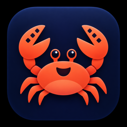

Tu próxima idea empieza aquí.
El instalador colocará CrabCut en Aplicaciones. Guarda tus proyectos y cierra CrabCut antes de continuar.
Developed by altherasolutions · Basado en Concat · AGPL-3.0-or-later